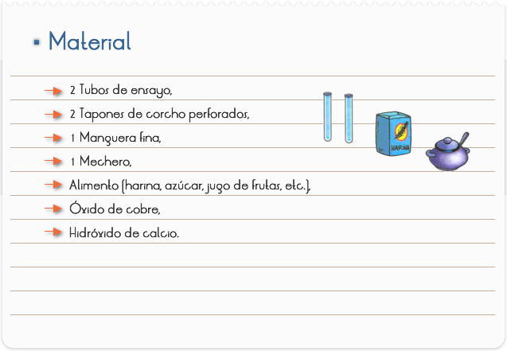
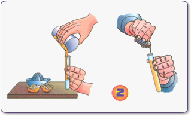
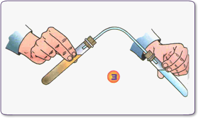
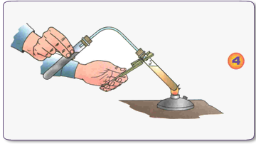

Introducción
Como los compuestos orgánicos provienen de seres vivos –animales y vegetales- se caracterizan por tener entre sus componentes C y H. además, pueden coexistir N (nitrógeno) y O (oxigeno), pero no en todos los casos. ¿Cómo comprobamos si un alimento contiene materia orgánica?
Objetivo
Localizar proteínas en los alimentos

1. Coloca en un tubo una porción de alimento diluido en agua destilada, si está en forma de polvo o sólida.
2. Agrégale el doble de óxido de cobre.

3. Tapa el tubo con un tapón de corcho perforado que traspasaras con la manguera. En otro tubo, coloca una solución de agua destilada con hidróxido de calcio (agua de cal). Debe quedar levemente blanquecina. Tápalo con el tapón, que traspasara con el otro extremo de la manguera fina.
4. El dispositivo quedará de la forma en que indica el dibujo (3).

5. Pon a calentar el primer tubo en el mechero con el broche de laboratorio y sostén el otro con la mano.

RESULTADOS Y CONCLUSIONES
El tubo que se encuentra sobre el mechero comenzará a burbujear, desprendiendo gases que se recogerán en el otro tubo.
Este tubo con agua de cal se oscurecerá o enturbiará con el dióxido de carbono, producto de la combustión de la materia orgánica.
En la manguera observarás pequeñas gotas de agua que se forman por la combustión del hidrógeno de la materia orgánica.